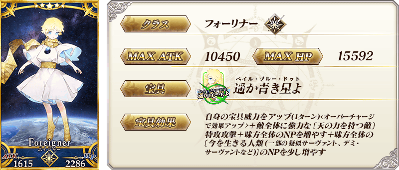
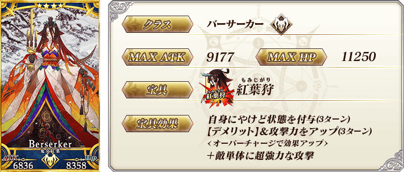
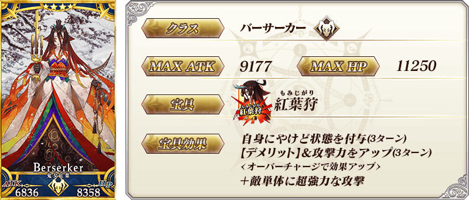
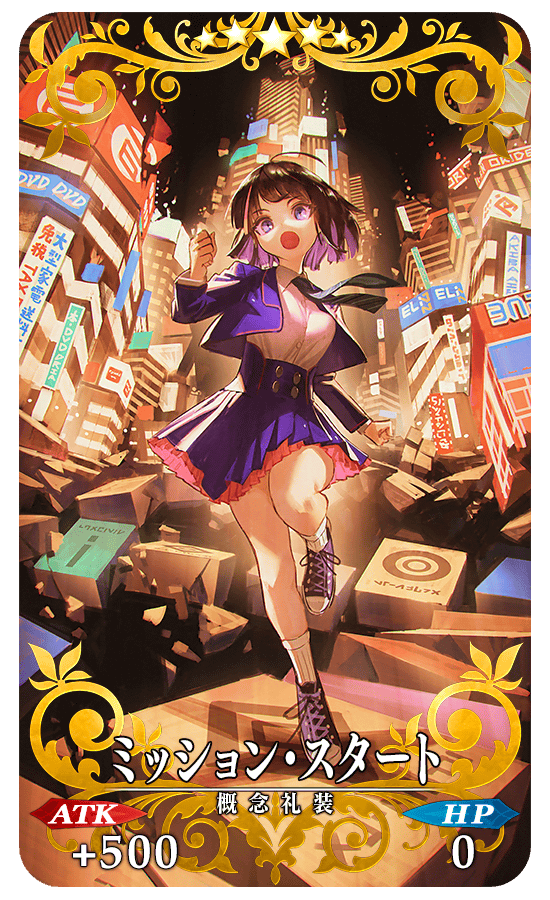
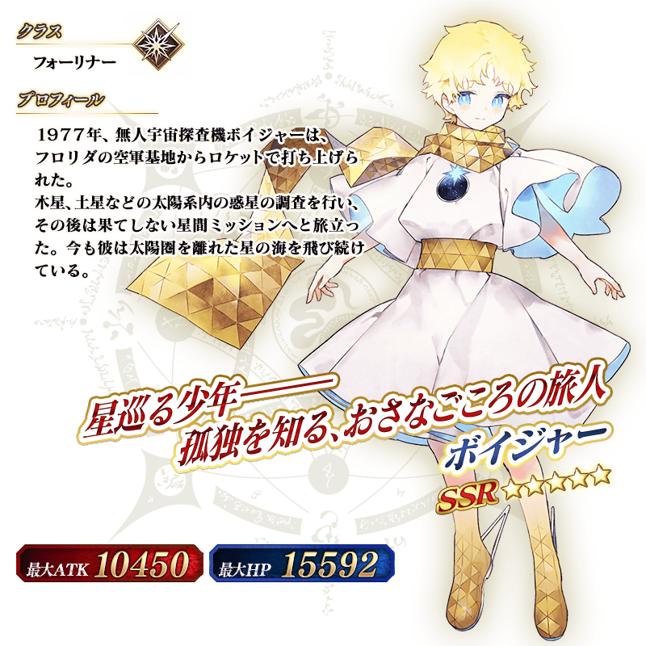
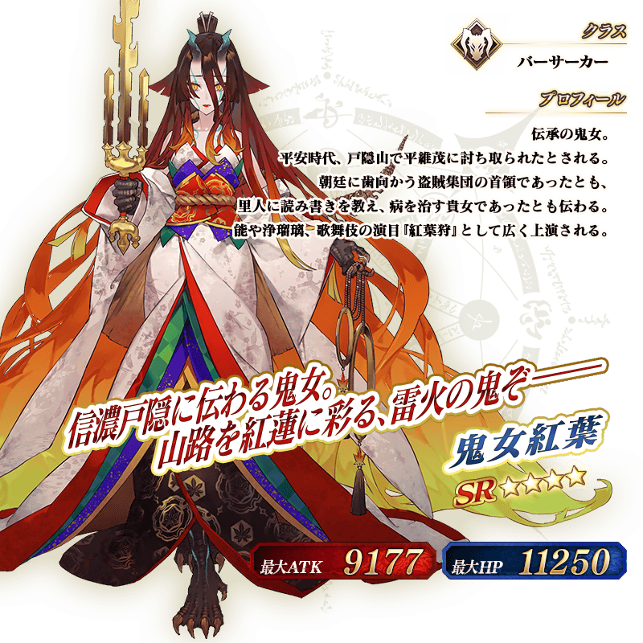

◆「Fate/Requiem聯動活動Pick Up召喚」期間◆
期間:2020年5月25日(一) 19:00～6月8日(一) 11:59
舉辦期間限定「Fate/Requiem聯動活動Pick Up召喚」！
Fate/Requiem×Fate/Grand Order聯動活動「『Fate/Requiem』盤上遊戲默示錄」中活躍的下述從者以期間限定新登場！ ・★5(SSR)Voyager ・★4(SR)鬼女紅葉
另外，下述的期間限定概念禮裝也Pick Up！ ・★5(SSR)ミッション･スタート ・★4(SR)トーナメント･スター ・★3(R)ミックス･ジュース 裝備上述3種概念禮裝的話，在聯動活動「『Fate/Requiem』盤上遊戲默示錄」中會提升活動道具的掉落獲得數。
Pick Up期間中，Pick Up對象從者與概念禮裝的出現機率提升！
詳情請在聖晶石召喚畫面左下的召喚詳細確認。
11次召喚中確定1張★4(SR)以上和確定1位★3(R)以上的從者！ ※確定★4(SR)以上包含從者和概念禮裝。 ※本頁面皆為開發中圖片。會有與實際圖片相異的情況。
◆有關從者的注意◆
※下述的從者在Pick Up期間結束後不會追加到故事召喚。
・★5(SSR)Voyager
・★4(SR)鬼女紅葉
◆有關概念禮裝的注意◆
※下述的概念禮裝，就算Pick Up期間中能靠友情點數召喚獲得。
・★3(R)ミックス・ジュース
※請注意在自動變還設定登錄★3(R)概念禮裝的情況，下述的概念禮裝會是自動變還的對象。
・★3(R)ミックス・ジュース

 
※上述「★4(SR)鬼女紅葉」的卡面為靈基再臨第3階段。

※上述「★4(SR)鬼女紅葉」的卡面為靈基再臨第3階段。
|  |
★★★★★SSR |

|
★★★★SR |
|
★★★R |

 ※上述「★4(SR)鬼女紅葉」的卡面為靈基再臨第3階段。
介紹在本召喚Pick Up的2位從者寶具演出！
在「Fate/Grand Order」官方網站內的公告中，以影片公開寶具演出，敬請確認。
※「★5(SSR)Voyager」的寶具會根據再臨階段變化演出。
【★5(SSR)Voyager】
【★4(SR)鬼女紅葉】
其他還有，聯動活動「『Fate/Requiem』盤上遊戲默示錄」同時舉辦！
關於詳情，請自下述橫幅確認。
■「『Fate/Requiem』盤上遊戲默示錄」詳細情報